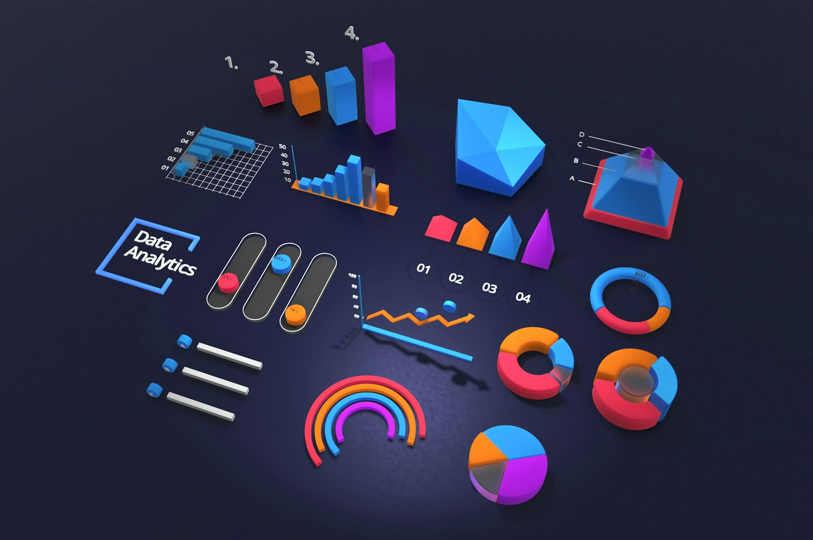
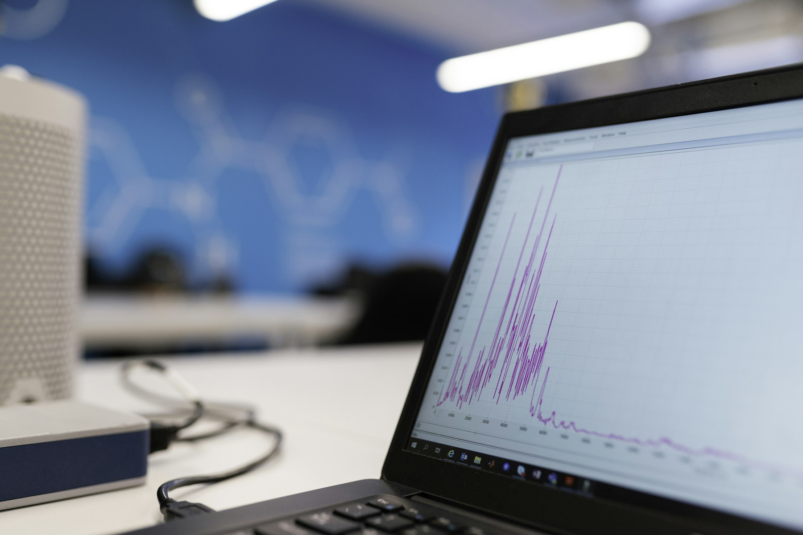

TL;DR
AI productivity tools are essential for enhancing efficiency in professional tasks.
By choosing the right tools for project management, communication, content creation, and data analysis, you can streamline workflows.
Avoid common pitfalls by aligning tool selection with team needs and ensuring proper training.

Understanding AI Productivity Tools
AI productivity tools are software applications that utilize artificial intelligence to improve efficiency and effectiveness in various tasks.
These tools can automate repetitive tasks, provide insights through data analysis, and enhance collaboration among teams.
At their core, these tools offer features such as natural language processing, machine learning, and data processing—all aimed at helping professionals save time.
By adopting AI productivity tools, you can significantly reduce the hours spent on routine tasks, allowing you to focus on more strategic aspects of your work.
Before diving into specific tools, it's essential to grasp the categories of AI productivity tools available.
They range from project management systems and communication platforms to content creation software and data analysis tools.
Top AI Tools for Project Management
When it comes to managing projects effectively, AI tools can help streamline workflows.
Tools like Asana and Trello integrate AI features for task assignment, deadline management, and workload distribution.
They also use predictive analytics to forecast delays and issues, enabling proactive management.
Moreover, platforms like Monday.com employ AI to suggest task prioritization and resource allocation based on historical data.
This intelligence allows teams to allocate their resources more efficiently and drive projects toward timely completion.
Consider selecting a project management tool that integrates with your existing systems for a smoother transition.
Look for free trials to test the features and determine user-friendliness before committing to a subscription.
Enhancing Communication with AI
Effective communication is key in any professional setting.
AI-powered communication tools like Slack and Microsoft Teams enhance collaboration through features like automated replies and intelligent meeting scheduling.
These platforms analyze patterns in messages and suggest responses, freeing up time for more critical discussions.
AI can also assist in managing large email threads, summarizing key points for quick reference.
Tools such as Superhuman use AI to enhance email sorting and prioritization based on your interactions.
To capitalize on these communication tools, ensure your team is trained on their features.
Regularly review workflows to incorporate new AI capabilities, ensuring that communication stays streamlined and efficient.
AI for Task Automation
Automation is one of the most significant advantages of AI productivity tools.
Applications like Zapier and Integromat enable professionals to automate workflows between applications, reducing the time spent on manual data entry.
For instance, you can set triggers such as 'if a new email arrives, then save the attachment to a specific folder.' This feature not only saves time but also minimizes the risk of errors commonly associated with manual processing.
Consider mapping out your frequently repeated tasks and identifying where AI can step in to automate these processes.
Start small and gradually expand automation to optimize your entire workflow.
AI Tools for Content Creation
Content creation can be time-consuming, but AI tools can significantly streamline this process.
For instance, tools like Grammarly and Jarvis offer suggestions for grammar, style, and even content structure.
These platforms leverage AI to improve your writing quality and creativity.
You can also explore design tools like Canva, which uses AI features to recommend layout adjustments and color schemes based on your existing content.
This integration enhances both your writing and visually appealing presentations without requiring advanced design skills.
To make the most of these tools, set clear content guidelines and utilize AI suggestions as a basis for refinement rather than the final product.

Leveraging Data Analysis with AI
AI tools for data analysis, such as Tableau or Google Analytics, can help professionals derive actionable insights from vast amounts of data.
These platforms enable users to visualize data trends and make informed decisions based on empirical evidence.
For example, you can set up dashboards that automatically update with new data, highlighting key performance indicators relevant to your business goals.
Machine learning features can even provide predictive analytics, helping you anticipate future trends.
To successfully integrate data analysis into your workflow, consider setting specific objectives for your data usage.
Regularly review the insights provided by these tools to refine your business strategies.
Mistakes to Avoid When Implementing AI Tools
Despite the clear benefits, many professionals make common mistakes when adopting AI productivity tools.
One major error is choosing a tool that doesn’t fit their needs or workflow.
To avoid this, conduct comprehensive research and utilize free trials before making long-term decisions.
Another mistake is neglecting team training.
AI tools can be complex, and without proper training, your team may not fully utilize their potential.
Schedule regular training sessions and encourage open feedback to optimize usage.
Lastly, avoid relying solely on AI for all tasks.
While AI can streamline many processes, human insight remains irreplaceable.
Always fuse AI-generated insights with human judgment to achieve the best outcomes.
FAQ
What are AI productivity tools?
AI productivity tools are software applications that use artificial intelligence to improve efficiency in tasks like project management, communication, and data analysis.
How do I choose the right AI productivity tool?
Consider your specific needs, team size, and integration capabilities with existing systems. Utilize free trials to assess compatibility.
Are there free AI productivity tools available?
Yes, there are several free AI productivity tools like Trello, Slack, and Google Analytics that can help streamline your workflows.
How can AI tools automate my work processes?
AI tools can automate routine tasks through predefined workflows, reducing manual data entry and speeding up processes.
Can AI improve my team’s communication?
Absolutely! AI communication tools can facilitate efficient interactions, manage email threads, and improve meeting organization.
Photo credits
- Photo 1: Deng Xiang on Unsplash (https://unsplash.com/@dengxiangs) (https://unsplash.com/photos/graphical-user-interface--WXQm_NTK0U)
- Photo 2: Rodeo Project Management Software on Unsplash (https://unsplash.com/@getrodeo) (https://unsplash.com/photos/man-in-black-jacket-walking-on-brown-wooden-floor-iqLVxrHp46k)
- Photo 3: Merakist on Unsplash (https://unsplash.com/@merakist) (https://unsplash.com/photos/team-freestanding-letters-RxOrX1iW15A)
- Photo 4: Arno Senoner on Unsplash (https://unsplash.com/@arnosenoner) (https://unsplash.com/photos/a-group-of-people-in-a-factory-bCgsKqFzUcg)
- Photo 5: Nikhil Mitra on Unsplash (https://unsplash.com/@nikhilmitra) (https://unsplash.com/photos/creative-decor-Q_6BS8IN0J8)
- Photo 6: ThisisEngineering on Unsplash (https://unsplash.com/@thisisengineering) (https://unsplash.com/photos/black-and-silver-laptop-computer-on-brown-wooden-table-0jTZTMyGym8)
- Photo 7: Christopher Burns on Unsplash (https://unsplash.com/@christopher__burns) (https://unsplash.com/photos/axe-beside-pipe-wrench-and-angle-grinder-naDLKYn2eMs)